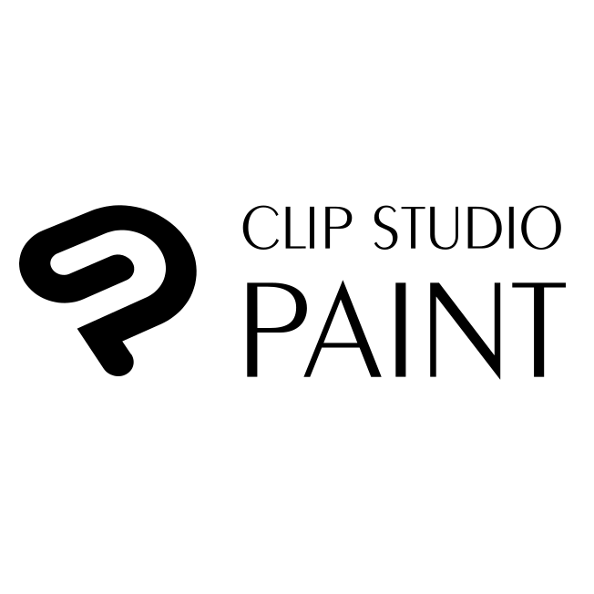

Voici la carte que vous pouvez découvrir en introduction de mon portfolio. Elle représente le royaume fictif d'Augeaime, un univers que j'ai imaginé et développé dans le cadre de mon jeu de rôle. La carte a été réalisée avec Photoshop et Illustrator, en m'inspirant du style des cartes de la série The Elder Scrolls.
La vidéo, quant à elle, a été créée à l'aide du logiciel de modélisation 3D Blender. Elle inclut des effets de lumière et une caméra dynamique pour donner vie à l'ensemble.
Ceci est l'un des nombreux assets que j'ai fabriqués pour enrichir l'univers de mon jeu de rôle. Vous pouvez également découvrir d'autres créations accompagnées de descriptions pour chacune :

Ici nous avons une fiche personnage d'un des personnages de mon Jeu de Rôle. J'ai choisi La Momie car il s'agit d'un des seules personnages dont l'image est dessinée par moi. L'intégralité des assets ont été dessinées sur tablette graphique, seules les textures et les polices d'écriture ont été prise sur Internet.
Ceci représente 11 Logos, représentant chacun un Dieu de l'univers de Last Fragment. Ils ont tous été pensé et réfléchit pour représenter leurs titres en plus d'y ajouter des éléments de lore et du symbolisme dans chacun d'entre eux.
Les logos sont similaires à ceux représentant les pays que vous pouvez retrouver en haut de la page.
C'est un des 15 dossiers que j'ai designé pour une session particulière de Last Fragment. Dans ce dossier, l'image du clan ainsi que l'image du personnage ont été générées par une IA génératrice d'images* qui à suivi l'un de mes prompts.
Voici des vitraux dessinés de A à Z par mes soins, le premier représente la Déesse de la Manipulation, le second celui des Flammes et du Pouvoir. Des textures et de la lumière ont été ajoutées au premier vitrail.

Voici deux plus petits projets de graphisme utilisant des mockups expliquant certains détails de l'histoire pour faciliter l'immersion lors de la lecture d'informations importantes.
Technologies utilisées :


- 
*Mon point de vue sur l'usage d'IA génératrice d'images est assez précis, je suis globalement contre, mais tant que cela reste gratuit ET est utilisé dans un cadre purement personnel, je le tolère. J'évite de m'en servir inutilement, cependant je me rends aussi compte de son utilité dans mon travail et je m'exerce à cet exercice à contre-coeur.